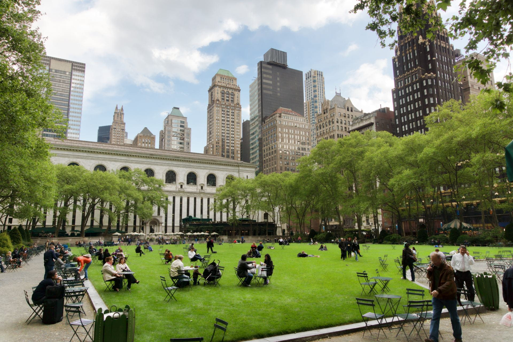
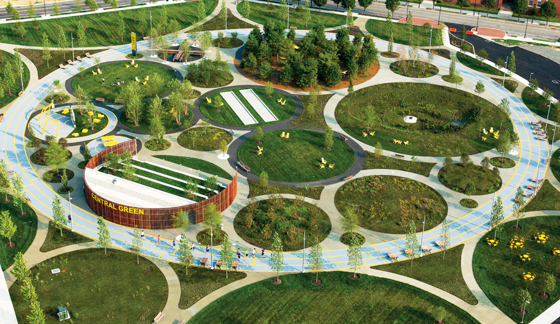
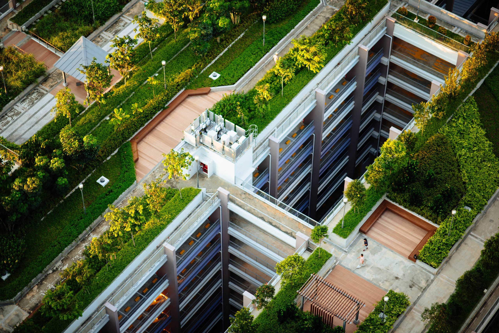

Green Parks
Green parks refer to public parks and green spaces that prioritize environmental sustainability and conservation. This includes features such as the use of native plant species, recycled materials, and sustainable water management systems. These parks also provide opportunities for environmental education and may have programs in place for the protection of wildlife and their habitats. The goal of green parks is to not only provide a space for recreation and relaxation, but also to promote environmental awareness and stewardship.
Green parks play an important role in sustainable development by providing a range of environmental, social, and economic benefits. Some of these benefits include:
- Biodiversity Conservation: Green parks protect and preserve local ecosystems and wildlife habitats, helping to maintain biodiversity and promote species diversity.
- Climate Change Mitigation: Parks can serve as carbon sinks, absorbing carbon dioxide and other greenhouse gases from the atmosphere. They can also help to reduce the urban heat island effect by providing shade and cooling.
- Improved Air and Water Quality: Trees and other vegetation in green parks can help to filter and purify the air and water, improving the overall quality of the environment.
- Economic Benefits: Green parks can drive economic development by attracting tourists and promoting real estate development, as well as providing recreational opportunities for local residents.
- Health and Well-being: Access to green parks has been shown to improve physical and mental health, reduce stress levels, and increase overall well-being.
- Social Benefits: Green parks provide a space for community gathering and social interaction, promoting social cohesion and improving community relationships.
Overall, green parks are an important aspect of sustainable development, providing a range of benefits that help to improve the health and well-being of both people and the environment.


